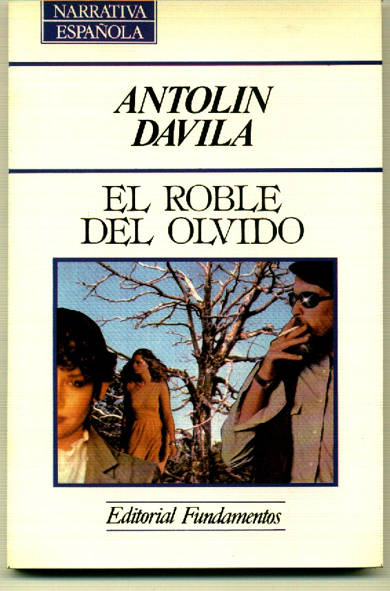

|
Página oficial del escritor Antolín Dávila |
|
|
El roble del olvido 
La recámara irónica que
alimenta las obras del escritor Antolín Dávila en esta novela, El roble del
Olvido, se proyecta e invade en cada una de sus páginas valiéndose, además,
de su inmensa capacidad de fabulación.
Quizá, en esta obra, junto a El cernícalo, nuestro autor
consigue a la perfección mantener la tensión del lector desde el comienzo
hasta el final de la misma, pero con más mérito, porque se arriesga desde la
primera página a desvelar el nudo de la trama, y a pesar de ello la intriga
prende al lector sin darle la menor concesión.
“Ramón Trujillo Castro nunca pudo ver la vida de cerca.
El padre de Ramón, Ramón Trujillo Batista, sentado un día bajo el
roble de la finca, junto a la era, se lo llegó a decir con toda la naturalidad
del mundo: “Hijo mío, tu llegada a esta vida ha sido el mayor error que he
cometido”.
Nunca pudo Ramón olvidar aquellas palabras. Cada noche, cuando se
tumbaba en la cama con las manos entrelazadas tras la nuca, los ojos muy
abiertos y el gesto contraído, veía desplazarse...”. |
|
Web creada por Eduardo Dávila: eduardo@eduardodavila.com
|